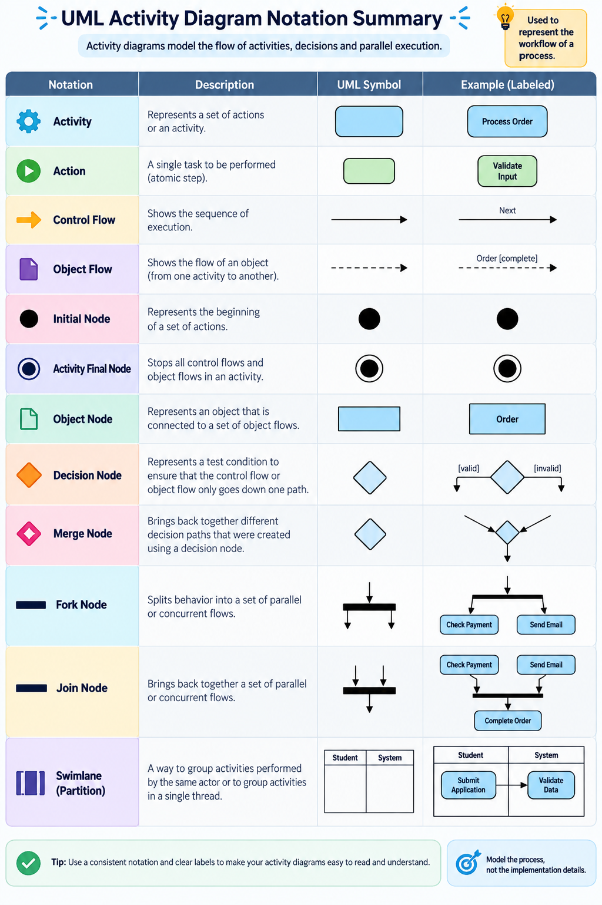

Lesson 07 · Workflow grammar
Activities, Decisions, Guards & Flow
Read the notation used to express work, sequencing, alternatives, iteration, and completion.
7of 12 pages
Core lecture
Notation essentials
- Action/activity: a task that needs to be done.
- Control flow: connects actions in execution order.
- Decision: a diamond that selects among guarded alternatives.
- Merge: reunites alternative routes.
- Initial / activity-final / flow-final nodes: define entry and termination.
- Object flow: shows information or objects moving among actions.
Visual reference
UML Activity Diagram Notation Summary
Use this large reference as a decoding sheet while reading and drawing activity diagrams. Focus first on the core symbols, then compare the example column to see each notation in context.

Critical distinction
Decision is not concurrency
Decision → Merge
Choose one alternative according to guards.
Choose one alternative according to guards.
Fork → Join
Start parallel work and synchronize it later.
Start parallel work and synchronize it later.
Example
Beverage preparation
Find beverage → if coffee is found, prepare filter/water and brew; otherwise obtain cola; obtain cups; then drink. The example shows how guarded alternatives and sequencing turn a verbal procedure into a visible workflow.
Remember
Guards belong on alternative outgoing flows. Make conditions mutually understandable and avoid unlabeled diamonds when the choice is not obvious.